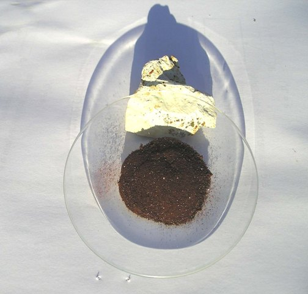

Tutti sanno che il cromo prende il nome dal variegato colore dei suoi composti nei diversi stati di ossidazione.
I più comuni sono normalmente due: -Cr3+ di colore verde e -Cr6+ di colore giallo o arancio; nel primo caso il cromo si comporta da classico metallo e nel secondo da metalloide, dando origine ai cromati, CrO4--, isomorfi con i solfati.
Il triossido di cromo CrO3 (di colore rosso scuro) è chiamato infatti anidride cromica (analogamente all'anidride solforica SO3), anche se l'acido cromico H2CrO4 non è conosciuto allo stato libero.
Anche il numero di ossidazione -Cr2+ è abbastanza comune e variamente colorato, dando origne ai sali cromosi, fortemente riducenti e tendenti facilmente ad ossidarsi a cromici -Cr3+, di colore questa volta sul verde.
Stati di ossidazione assolutamente straordinari sono invece per questo versatile metallo i numeri 4 e 5.
Si comporta da tetravalente (4+) nell'esafluorocromato di potassio (K2CrF6), e da pentavalente (5+), con colore blù o marrone, nel bel composto iperossigenato K3Cr(O2)4 o K3CrO8 che andremo a preparare fra un attimo.

La reazione che faremo avvenire è la seguente:
K2Cr2O7 + 4 KOH + 9 H2O2 -> 2 K3CrO8 + O2 + 11 H2O
Materiale occorrente
- Potassio bi(di)cromato K2Cr2O7
- Acqua ossigenata H2O2 al 30/35%
- Potassio idrossido KOH
- Etanolo, etere
La procedura coinvolge sali di cromo esavalente, tossici e potenzialmente cancerogeni, perossido di idrogeno e idrossido di potassio concentrati, pertanto in modo categorico anche questa sintesi NON è adatta a chi lavora con leggerezza.
- In un becker da 100 ml sciogliere 5 g di K2Cr2O7 e 5 g di KOH in 15 ml di acqua; la soluzione gialla di cromato K2CrO4 ottenuta deve essere perfettamente limpida, se non lo fosse filtrare opportunamente.
Preparare in un altro contenitore 40 ml di acqua ossigenata al 15%, diluendo a doppio volume 20 ml di H2O2 a 130 volumi.
Porre i due contenitori in un congelatore e tenerveli finchè la temperatura dei liquidi sia a circa -10°, al limite del congelamento.
In mancanza del congelatore si può usare una miscela di ghiaccio e sale in quantità opportuna (tanta!).
Quando il raffreddamento è effettuato, aggiungere molto lentamente agitando con una bacchetta di vetro l'acqua ossigenata al cromato; esso assumerà inizialmente un colore aranciato e poi via via sempre più scuro, quasi nero.
Tenere la miscela sempre abbondantemente sotto lo zero per almeno un paio di ore, senza più mescolare, lasciando che la reazione si svolga tranquillamente, senza svolgimento tumultuoso di ossigeno.
(Inutile ricordare le precauzioni da prendere in caso di uso di un congelatore domestico per evitare i microspruzzi di cromo esavalente...!).
Alla fine decantare il liquido scuro ma limpido che sovrasta i cristallini scuri che si saranno depositati sul fondo del becker.
Risciacquare due tre volte con 7 ml di acqua molto fredda, ed altrettante con la medesima quantità di etanolo, decantando ogni volta al meglio.
Per favorire la rapida essicazione del prodotto, risciacquare un'ultima volta con una decina di ml di etere.
Porre su carta da filtro e lasciar asciugare.
Il tetraperoxicoromato di potassio si presenta come una polvere microcristallina di colore bruno scuro (non nero), non igroscopica e che si conserva bene senza problemi.
La resa è stata di 5 g, pari al 50% del teorico.

La foto è un po' particolare (coerentemente col prodotto!), ed è stata fatta al tramonto con luce radente molto calda e col sostegno di un sassolino; si vede il bel colore marrone carico del prodotto, ma non si apprezza il luccichio dei cristallini, che appaiono come puntini bianchi. Unico modo per vederlo dal vivo è... farlo!
Naturalmente questo composto è estremamente ossidante e non stabile a caldo, dove si decompone in maniera esplosiva, originando cromato, ossido e perossido di potassio. (La reazione dei composti di combustione è infatti fortemente basica).
Per fare il test mettere qualche decina di mg di sostanza su una spatolina e scaldare col bunsen: ecco una bella microesplosione gialla!
La formula di struttura dell'immagine iniziale non è proprio formalmente corretta, ma è quella che rende maggiormente l'idea di questo sale inorganico con la pancia così piena di ossigeno.
Che esso si decomponga facilmente al calore NON significa minimamente che sia da considerarsi come una sostanza esplosiva, ma con i tempi che corrono è bene intendersi...